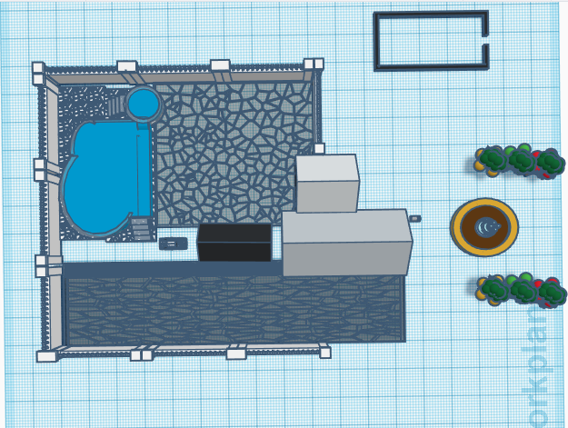

Tinkercad House
My House
This project took our class about a week to complete it. Our mission was to create a house using a porgram called Tinkercad. This program has a lot of tools that helped us build houses from scratch. My house is based on a more modern looking house that one might find being built today. It has a patio,a fence, a garage, a little garden, a pool, and I even included small details like a mailbox and a car in the backyard. This project helped me become more creative because I was able to create my own house using simple shapes like triangles and rectangles.
